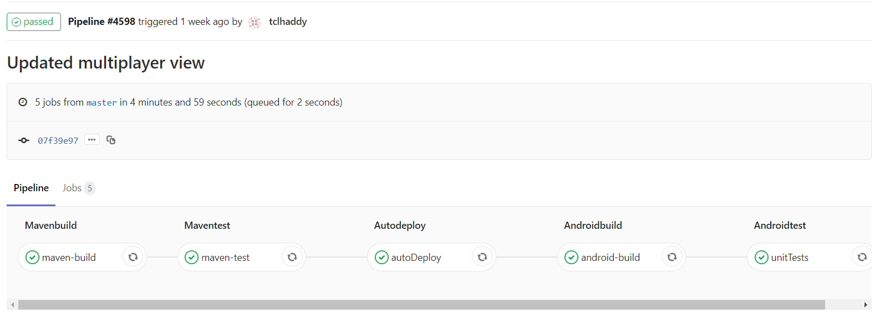

Project still in progress...
ComS 309 - TwentyOne
- First: This first demo covered the project proposal and each group members roles.
- Second: The second demo required the app to have "round trip" communication. Client to Server, Server to Database, Database to Server, Server to Client.
- Third: This demo's requirements were that the game's core features should be implemented. In our case this included signing in, joining a lobby, starting a game, playing the game, and finishing the game.
- Fourth: The final demo will present the secondary features of the app. In this case it will be card backs, player preferences, tuning of the UI, and a chatting feature.
Class Project Proposal (Bare html page)
What is TwentyOne
TwentyOne is the app my three group members and I have been developing. It is an android app with a client built in android studio and a backend made on the Spring Framework with integration to a mySQL server. The server was supplied and hosted by Iowa State University.
First Project Iteration
The following images are taken from the first iteration of TwentyOne.
Issues and concerns with first iteration.
For this first demo we ran into a few issues. The big problems we worked to address in the next demo were as follows:
- Lobby ready up page does not update regularly
- Refresh button was temporarily added until we can get the game to update automatically
- Mysterious crash occurs when attempting to join lobby on Android 8.1.0 OREO
- Player 3 and 4 should not show when there are only two players in the game
We plan to solve these issues with the following:
- Have the lobby screen update regularly or implement web sockets that tell other players when a player is ready
- Have the game screen update by using web sockets. Whenever someone hits or stays they send a message to other players
- Debug the code looking for what error is being thrown when attempting to access lobby screen
- Double check the multiplayer screen code for a simple error since player 4 disappears when there are only 3 players.
gitlab CI/CD implementation
CI/CD implementation for our project allows for seamless integration and 100% server uptime after each addition.
The following are the stages of the pipeline:
- Maven Build - Builds the Spring Boot project.
- Maven Test - Tests the built project.
- Autodeploy - Builds the Spring Boot project and outputs a jar. (see below for more information)
- Android Build - Builds the Android Project and adds the APK to the artifacts.
- Android Test - Tests the Android Project.
Autodeploy
In stage 3 of the pipeline a jar is produced and moved to a target folder. After the jar is moved, a service I created on the redhat server executes which runs the jar.
Example of recent pipeline
I configured gitlab to build the spring project and output a jar which it then moves to a target folder on the server.